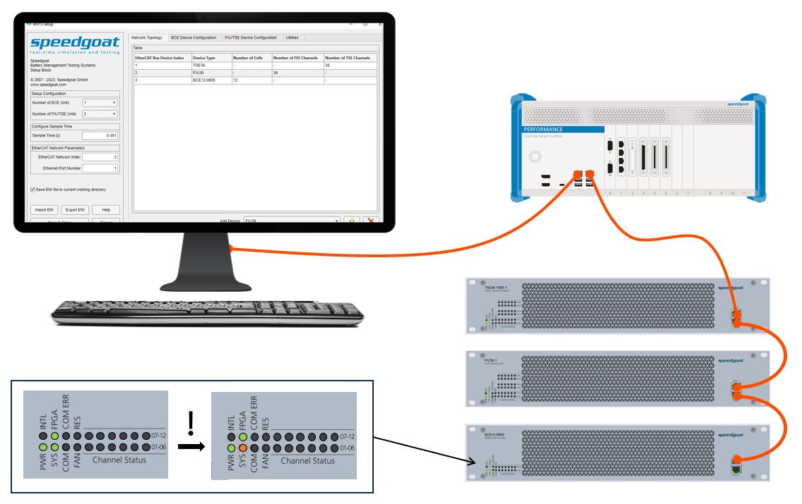
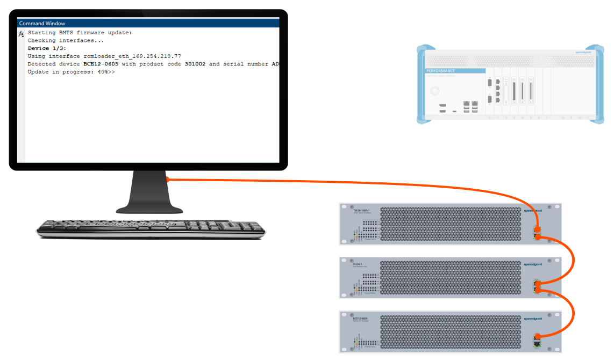
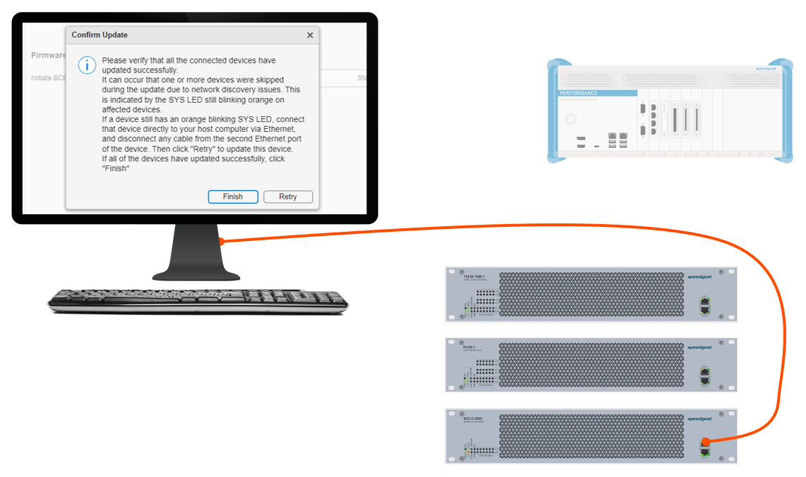
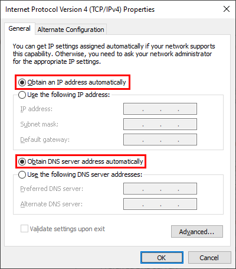
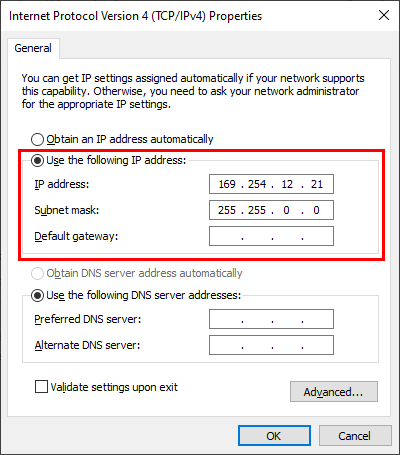

BMTS Firmware Update Instructions
BMTS Firmware Update Instructions — Instructions on how to update the firmware of BCE, FIU and TSE devices
Overview
![[Note]](images/note.png) | Note |
|---|---|
This documentation refers to the Speedgoat Battery Management Testing Systems (BMTS) that are supported with MATLAB R2022a and later. |
The BCE, FIU and TSE devices each run a dedicated firmware which is programmed onto the device. The firmware is continuously maintained and updated by Speedgoat. This document explains the steps necessary to update the firmware of Speedgoat BMTS devices. Firmware updates are included with new versions of the Speedgoat I/O Blockset.
1. Preparation
On one EtherCAT bus, multiple BCE, FIU and TSE devices are connected in a daisy chain using Ethernet cables. The devices shall remain connected in the same way for the update process. All devices of one EtherCAT bus will be updated consecutively. A Simulink model with a correctly configured BMTS Setup block is required to initiate the process.
After configuring the number and order of devices on the Network Topology tab of the BMTS Setup block, switch to the Utilities tab and click the Start Firmware Update button.
2. Put BMTS devices into flash mode
Follow the on-screen instructions to automatically generate a Simulink model that enables you to switch all of the connected BMTS devices into flash mode. This is necessary for the BMTS devices to be able to receive a firmware update. Flash mode is activated by sending a dedicated signal from the Speedgoat real-time target machine to each BMTS device over EtherCAT.
Make sure all BMTS devices and the real-time target machine are turned on and linked correctly with Ethernet cables. An example setup with three BMTS devices is illustrated below.
Build and run the generated Simulink model on your target machine.
After a few seconds of runtime, all BMTS devices switch into flash mode and the Simulink model stops automatically.
Confirm that all of the BMTS devices have switched into flash mode by checking the SYS LED on each device, which should blink yellow in flash mode.
Only continue with the next step if all BMTS devices have switched into flash mode. If only some of the devices have switched, power-cycle the entire collection of BMTS systems and run the Simulink model again.

3. Transfer Firmware Update
The firmware update will be transferred directly from the host computer to the BMTS devices, without using the real-time target machine.
Identify the Ethernet cable which connects the real-time target machine to the first BMTS device in the daisy chain. Disconnect the cable from the real-time target machine, and connect it to an Ethernet port of your host computer instead. The Ethernet port should have DHCP enabled. Alternatively, an IP address from the link-local address range (169.254.x.x) can be assigned to the host PC Ethernet port. Otherwise, the BMTS devices may not be able to communicate with the host computer. An example setup with three BMTS devices is illustrated below.
For more info on how to configure IP addresses in Windows, refer to the Appendix section at the bottom of the page.
Wait at least 10 seconds for the DHCP server to assign IP addresses.
Continue with the on-screen instructions to start the firmware update.
The remaining update process is automated. Observe the MATLAB Command Window for status updates. Verify that all of the devices are detected and updated one after the other.
The flash process can take up to two minutes per device. Do not interrupt the update process at this point. However, if any issues occur during the update, these can usually be fixed by repeating the flash process.

4. Verification
Once the update process is finished, verify that all the connected devices have updated successfully. It can occur that one or more devices were skipped during the update due to network discovery issues. This is indicated by the SYS LED still blinking yellow on affected devices.
If a BMTS device still has a yellow blinking SYS LED, connect that device directly to your host computer via Ethernet, and disconnect any cable from the second Ethernet port of the device, to achieve a single point-to-point connection. An example setup is illustrated below. Then, click "Retry" to update only this device. Repeat this step for all devices which were skipped before.
After successful transfer of the firmware update to each device, a BMTS device internal update process is started. This phase can take up to 40 seconds. On newer firmware versions, this phase is indicated with a yellow RES LED, and completion is indicated by the RES LED blinking green three times, then the RES LED turns off. Depending on the previous firmware version, no internal update process may be required.
When the internal update has finished, the BMTS devices automatically reboot using the latest firmware. After waiting at least 40 seconds, or when all of the RES LEDs have turned off, the devices are operational again.

Appendix: Configure Windows Network Settings
To communicate with the BMTS devices during a firmware update, the used Windows Network Adapter must either be configured for DHCP, or assigned a link-local IP address (169.254.xxx.xxx).
In the Windows Network and Sharing Center, configure the Internet Protocol Version 4 Properties for your Ethernet controller as follows (choose one of the options):
Option 1: Use DHCP

Option 2: Manually assign a link-local IP address (169.254.xxx.xxx)

Option 3: Assign an additional link-local IP (169.254.xxx.xxx)
Open the Advanced... settings and add a link-local IP address: